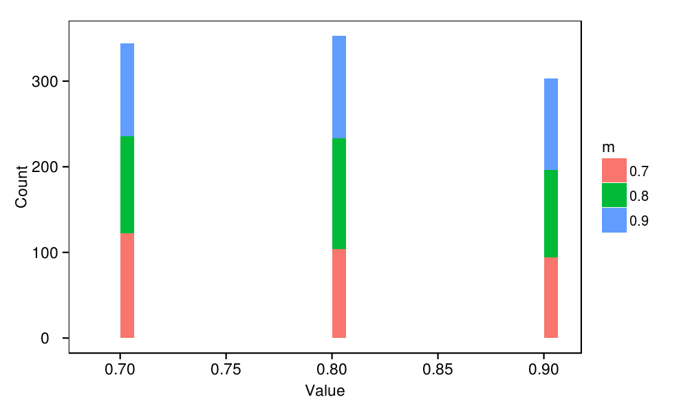
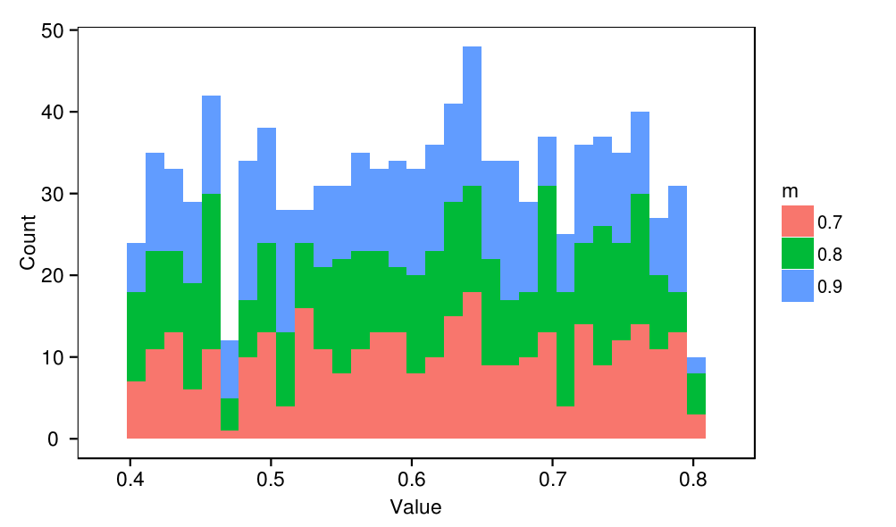
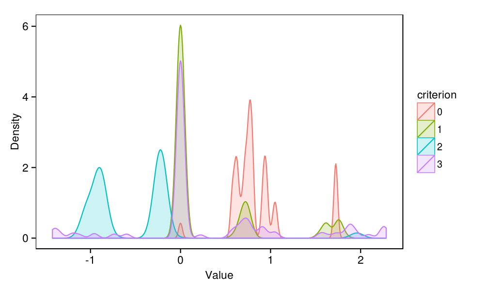
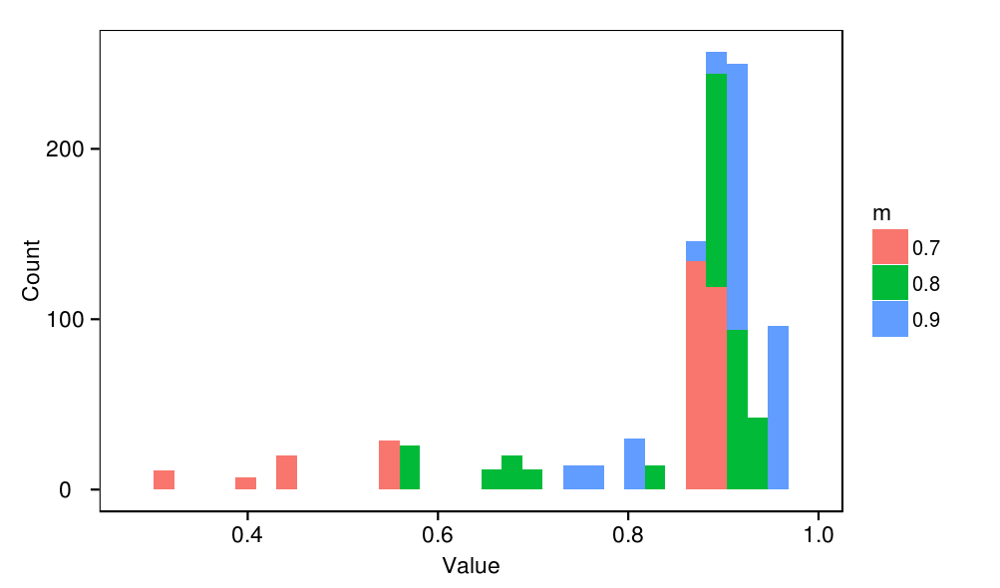
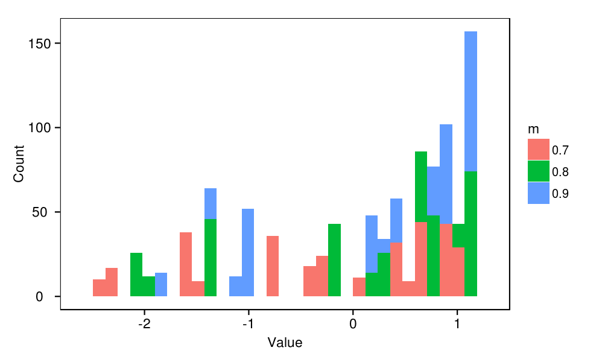
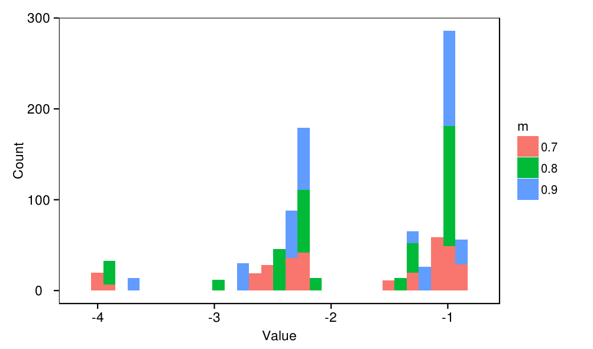
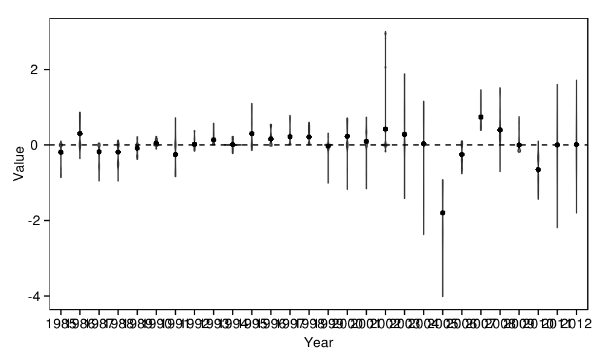

Indian Ocean skipjack model : Parameter distributions
source('../../common.R',local=T)
require(stringr)
load(c(
'samples'
),from='../output')
# Function for plotting densities of parameters
plot_densities <- function(param){
print(
ggplot(data.frame(
value = samples[,paste0(param,'.value')],
m = factor(samples$mortality_base.value)
)) +
geom_bar(aes(x=value,fill=m)) +
labs(x="Value",y="Count")
)
}
plot_densities(param)
plot_densities(param)
plot_densities(param)
plot_densities(param)
plot_densities(param)

plot_densities(param)
plot_densities(param)
plot_densities(param)
plot_densities(param)
temp <- melt(samples[,paste0("recruits_deviations.",1985:2012,"..value")])
temp$year <- str_extract(temp$variable,"\\d+")
print(ggplot(temp,aes(x=year,y=value)) +
geom_violin(fill='grey') +
geom_point(data=ddply(temp,.(year),summarise,y=mean(value)),aes(y=y)) +
geom_hline(y=0,linetype=2) +
labs(x='Year',y='Value'))

recruits_deviations
parameters. The dots represent the mean of each distribution.